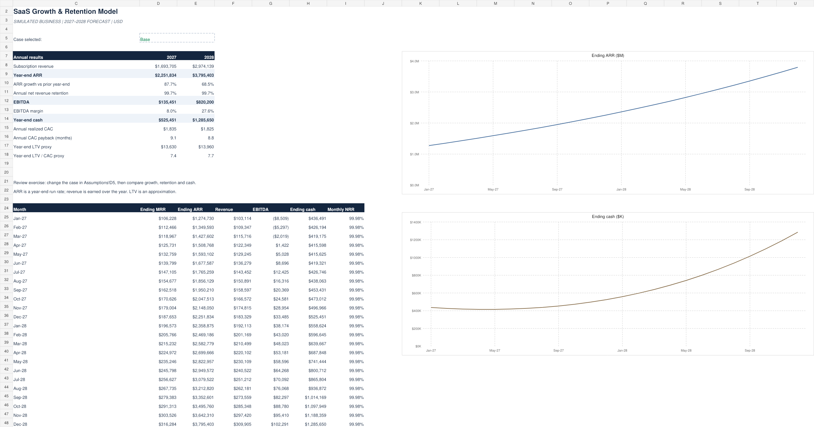

SaaS Growth &
Retention Model.
A 24-month financial model connecting acquisition spending, customer retention, recurring revenue, profitability and cash.
Download Excel model ↓Fictional business · Simulated inputs · 2027–2028 forecast · USD
Created with Codex assistance. No employer or client data.
Can growth pay for itself?
The model tests how acquisition efficiency and retention affect a subscription business starting with 400 customers, $100,000 in monthly recurring revenue and $450,000 in cash. It separates recurring revenue run rates from revenue earned during the period, and follows cash without inserting financing.
Revenue & retention
Customer roll-forward, new MRR, churn, expansion, contraction, ARR, monthly GRR and NRR, and annual cohort NRR.
Acquisition economics
Target and realized CAC, new-customer ARPA, gross-profit LTV approximation, LTV/CAC and gross-margin payback.
Operating outlook
Gross profit, acquisition spending, R&D, G&A, EBITDA, capex, simplified free cash flow, cash and current-burn runway.
Three cases. One editable model.
These are precomputed results from the delivered workbook's original assumptions. Change the selected case or monthly drivers in Excel to recalculate the model.
| Case | Dec-2028 ARR | 2028 annual NRR | 2028 CAC payback | Dec-2028 cash |
|---|---|---|---|---|
| Base | $3,795,403 | 99.7% | 8.8 months | $1,285,650 |
| Downside | $2,202,790 | 77.4% | 13.4 months | $36,532 |
| Upside | $6,725,345 | 116.4% | 6.5 months | $2,583,359 |
Decision to investigate: the Downside case still grows ARR, but ends with only $36,532 in cash. Revenue growth alone does not establish that the acquisition plan is affordable. Compare lower CAC, stronger retention and spending changes before committing to the plan.
Inspect the Excel dashboard.

Static preview of the Base case. The downloaded workbook contains editable assumptions, linked formulas and native Excel charts.
A five-minute review.
- Open the workbook and review the annual revenue, ARR, NRR, payback and cash on Dashboard.
- Go to Assumptions!D5. Enter 2 for Downside, or 3 for Upside. Review the updated dashboard.
- Change a blue monthly CAC or churn input in the selected case. Trace the result through Revenue, Cohorts and Operating.
- Review Checks for customer, MRR, cohort, revenue, EBITDA and cash reconciliations. Read Guide for timing and metric definitions.
Model boundaries: monthly subscription revenue uses average beginning and ending MRR. Cash collections equal recognized revenue and expenses are paid in-month. Taxes, debt, financing, deferred revenue and working capital are excluded. LTV is a gross-profit approximation. This is an operating forecast, not a complete three-statement model.
Verified using Artifact Tool: all three cases, independent MRR/cash calculations, six monthly reconciliations, annual revenue and NRR, later-period driver changes, zero acquisition spend, zero churn and missing selected inputs. Excel for Mac was not directly tested.